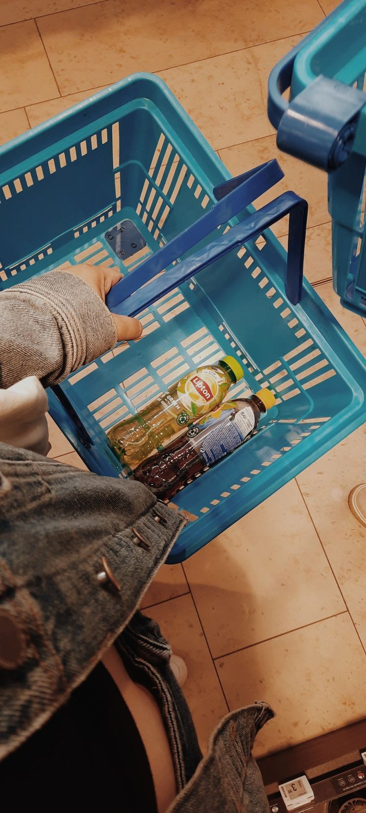

In this HR attrition project, I looked at HR attrition level, retention patterns and other KPIs.

In this analysis, I examined Ace Supermarket's sales data to assess how well each branch was doing, to find regional trends, and to evaluate how profitable different products were. The project offers practical insights by examining key metrics like revenue, order volume, and which items are flying off the shelves. The goal is to fine-tune inventory management, boost regional strategies, and ultimately, make sales more efficient.

Here, I examined the sales data from Justrite Supermarket to identify trends in customer preferences, product performance, and the profitability of various branches. The project aims to provide strategic insights to improve operational efficiency and encourage business growth. This will be achieved by thoroughly examining revenue, product lines, customer demographics, and payment methods..
In this project, I dived into supermarket sales data to assess product performance, customer preferences, and operational efficiency. By analysing metrics such as product visibility, pricing, sales volume, and supermarket characteristics, the goal is to uncover insights that inform inventory optimisation, pricing strategies, and customer engagement initiatives.

In this car project, I focused on analysing car sales data to uncover trends in customer preferences, pricing patterns, and market performance. By examining factors such as brand popularity, fuel types, engine preferences, and geographic sales distribution, the project aims to provide actionable insights to drive informed business decisions in the automotive industry.

This is one of our excel projects where we looked into a market survey in Osun State Nigeria, in order to get some insights.